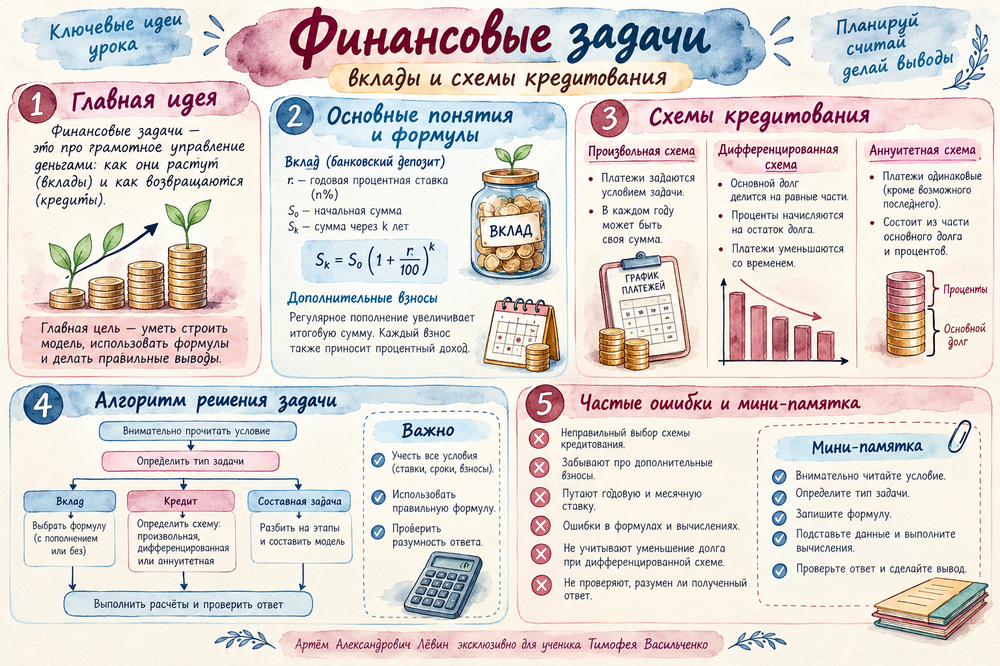

Пять колонок, один метод
Начальная сумма → начисленный процент → общая задолженность → платёж → остаток. Эта последовательность работает при любой кредитной схеме. В следующем году проценты начисляют на остаток предыдущего периода.
| Год | Начальная сумма | Начисленный процент | Общая задолженность | Платёж | Остаток |
|---|---|---|---|---|---|
| i | Bᵢ | Bᵢ · p | Bᵢ · k | Xᵢ | Bᵢ · k − Xᵢ |
Обозначения
S — первоначальная сумма; r — ставка в процентах; p = r / 100 — её десятичная запись; k = 1 + p — коэффициент роста.
Общий долг равен начальной сумме плюс процент. Платёж вычитают после начисления процента. После последнего платежа остаток должен быть равен нулю.
Пополнение меняет базу процентов
Вклад начинается с суммы 850 тыс. руб. В начале второго года добавляют 350 тыс. руб. На счёте через два года 1549,76 тыс. руб. Неизвестна годовая ставка.
Положительный коэффициент k = 1,16, поэтому r = (k − 1) · 100% = 16%. Взнос в начале второго года участвует в начислении процентов за этот год.
r = 16%, p = 0,16 и k = 1,16 — три записи разных величин.
Схему задают слова условия
«Долг на 40% меньше долга предыдущего года» означает, что после платежа остаётся 60% прежнего остатка.
«Долг уменьшается на одну и ту же сумму»: основной долг убывает одинаковыми частями, проценты становятся меньше.
«Кредит погашен равными платежами»: каждый ежегодный платёж обозначают одной буквой x.
Проверьте распознавание
«В июле каждого года долг должен быть на 20% меньше июльского долга предыдущего года». Какую схему следует выбрать?
Выберите схему.
Порядок действий для любой задачи
- Прочитайте условие и определите, вклад это или кредит.
- Для кредита установите схему по правилу изменения остатка или равенству платежей.
- Заполните таблицу по годам: начальная сумма, проценты, общий долг, платёж, остаток.
- Ответьте именно на вопрос задачи и проверьте остаток в последнем периоде.
На 40% меньше: остаётся 60%
Пример занятия: кредит 1,5 млн руб., четыре года, 10% годовых. В конце первых трёх лет остаток составляет 60% от остатка предыдущего года, в четвёртый год кредит погашается.
| Год | Начальная сумма, млн | Процент, млн | Общий долг, млн | Платёж, млн | Остаток, млн |
|---|---|---|---|---|---|
| 1 | 1,5 | 0,15 | 1,65 | 0,75 | 0,9 |
| 2 | 0,9 | 0,09 | 0,99 | 0,45 | 0,54 |
| 3 | 0,54 | 0,054 | 0,594 | 0,27 | 0,324 |
| 4 | 0,324 | 0,0324 | 0,3564 | 0,3564 | 0 |
Последний платёж равен всей задолженности последнего года:
Все расчёты выполнены в млн руб., окончательный ответ переведён в рубли.
Аннуитет: одна неизвестная x
Пример занятия: кредит 810 тыс. руб. под 16% годовых на два года погашается двумя равными платежами. В таблице оба платежа записываются как x.
| Год | Начальная сумма | Процент | Общий долг | Платёж | Остаток |
|---|---|---|---|---|---|
| 1 | S | Sp | Sk | x | Sk − x |
| 2 | Sk − x | (Sk − x)p | (Sk − x)k | x | (Sk − x)k − x = 0 |
При k = 1,16 ежегодный платёж равен 504,6 тыс. руб. Если спрашивают общую сумму платежей, нужно найти 2x = 1 009 200 руб.
Если равных платежей три, x = Sk³ / (k² + k + 1), а общая сумма платежей — 3x.
Постоянна доля основного долга
При дифференцированной схеме каждый год погашают одну и ту же часть первоначального кредита S / n. Проценты начисляются на постепенно уменьшающийся остаток, поэтому платежи, как правило, отличаются.
Аннуитетная — фиксирован платёж. Дифференцированная — фиксирована часть основного долга. Произвольная — остаток следует условию задачи.
Десять задач для закрепления
Сначала определите схему. Затем запишите расчёт по годам. Сохраняйте точность промежуточных вычислений и отвечайте именно на вопрос задачи.
- На вклад 400 тыс. руб. за год начислили 12%. Найдите коэффициент роста и итоговую сумму.
- Вклад 500 тыс. руб. под 10% годовых. В начале второго года внесли ещё 200 тыс. руб. Найдите сумму после второго года.
- Вклад 600 тыс. руб.; в начале второго года пополнение 250 тыс. руб. Через два года 1164 тыс. руб. Найдите ставку.
- Кредит 800 тыс. руб. на два года под 10%. После первого года остаётся 75% первоначальной суммы. Найдите второй платёж.
- Кредит 1 млн руб. на три года под 12%. После первого и второго годов остаток сокращается на 20%. Найдите третий платёж.
- Кредит 1,25 млн руб. на четыре года под 8%. Первые три года остаток сокращается на 40%. Найдите четвёртый платёж.
- Кредит 900 тыс. руб. на три года под 10%, основной долг погашается равными частями. Найдите второй платёж.
- Кредит 1,2 млн руб. на четыре года под 15%, основной долг погашается равными частями. Найдите общую сумму платежей.
- Кредит 210 тыс. руб. на два года под 10%, два равных платежа. Найдите их общую сумму.
- Кредит 331 тыс. руб. на три года под 10%, три равных платежа. Найдите один платёж и общую сумму.
Ответы для самопроверки · открыть после решения
Материалы занятия

